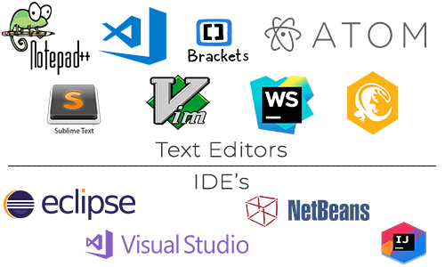
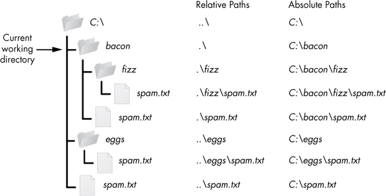
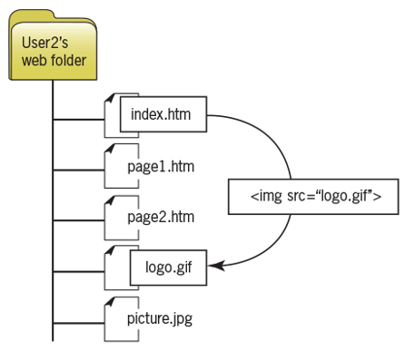
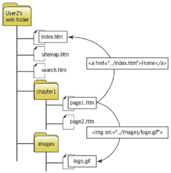

Intro. to Web Tooling
Instructor: Chris Fulton
Learning Objectives
- Development Tools and Environments
- Discuss and Compare Text Editors and IDE's (Integrated Development Environments)
- Explain the benefits of Local vs. Cloud Dev. Environments
- Understanding File Structure
- Compare Relative vs. Absolute file paths
- Discuss File Structure best practices
- DevOps Tools
- What is DevOps?
- Survery of Tools and processes
- Application Tools
- Frameworks | Compiler/Compression Tools
Development Tools
Text Editors ✦ Integrated Dev. Environments
- Text Editor - a software program that allows users to input and edit text. Allows you to create and edit a range of programming language files
- Integrated Development Environment (IDE) - a software suite that consolidates the basic tools developers need to write and test software. Typically, an IDE contains a code editor, a compiler or interpreter and a debugger that the developer accesses through a single graphical user interface (GUI).

Development Tools
Local Development ✦ Cloud Development
- Local Development - hosting your site’s files locally (on your computer) rather than externally (like on a hosting company’s servers).
- Cloud Development - a web-based integrated development platform where your files are hosted externally. Web-based development examples include Cloud9(now apart of Amazon), codeenvy, shiftedit, Orion, codeeverywhere.

Folder Paths
Absolute Paths ✦ Relative Paths
- Absolute Paths - a path that starts from the root folder and processes down the entire folder structure
- Relative Paths - a path is expressed relative to the location of the current document.
- File Path Location:
/ - means the root of the current drive
./ - means the current directory
../ - means the parent of the current directory

Setting a Directory Structure
- You build a site in a local/cloud environment but typically host it on a different computer
- The files for your web site must be transferred from the development environment to the hosting computer
- Your file structure must be transferable
- Use relative paths to indicate file locations
Single Folder Structure
- files are placed in the root folder. Images, JS files, css files all exist in root folder.

Hierarchical Folder Structure
- additional folders are created within the root folder to categorize the different type of files. Images, JS files, css files will exist within their respective folder.

File Structure Best Practice
- Basic structure we'll use is similar to picture on the left.
- Different file structures will look different based on technology stack and type of project.
- The idea is to have order and structure to your files

In-Class Activity
<!DOCTYPE html>
<html>
<head>
<title>Basic Structure </title>
</head>
<body>
<img src="" alt="" />
</body>
</html>
- Create a new web project and replicate the file structure from the previous slide.
- Within the index.html file, copy the code from above and save the file
- Download a popular logo image from the internet and add the image into the images folder
- Locate the <img> tag and provide the relative path to properly resource the image into index.html
- Save the file and render in browser
What is DevOps
What is DevOps?
DevOps is a set of practices that automates the processes between software development and IT teams, in order that they can build, test, and release software faster and more reliably.

What is DevOps?
JAMF Case Study
Click here for case study
Observations
Discuss some of JAMF's limitations prior to implementing DevOps
Tools
What are some of the tools and services they utilized
Considerations
Identify some of the other factors that needed to be addressed prior to implementing DevOps
Survey of DevOp Tools
Versioning Tools ✦ CI/CD Tools ✦ Automation Tools ✦ Monitoring Tools
- Git and Github Version Control
- Docker and Kubernetes
- Github Actions and Jenkins
- Azure DevOps
- Jasmine and Selenium Testing
- Heroku
Application Tools
Application Tools
Front-end Frameworks ✦ Back-end Frameworks ✦ Automation Tools ✦ Monitoring Tools
Front-end frameworks
- HTML Template Based- Bootstrap, Zurb, PureCSS, etc.
- Component-Based- React, Angular, Vue, Ember, etc.
- Template Binding- HandleBars, Mustashe, Ejs, knockout, jade, etc.
Back-end Frameworks
- Routing- Express.js, Hapi.js, page.js
- Persistant Data Source- Relational Databases [MySQL, Postgres], NoSQL [MongoDB, CouchDB/Cloudant], Graph Databases, ect..
Automation
- Module Bundler/Task Runner- Webpack, Grunt, Gulp
- Testing- Jest, Mocha, Jasmine, ect.
References
- https://searchsoftwarequality.techtarget.com/definition/integrated-development-environment
- http://duspviz.mit.edu/tutorials/localhost-servers/
- https://readwrite.com/2013/04/16/why-cloud-development-environments-are-better-than-desktop-development/
- https://automatetheboringstuff.com/chapter8/